Digital Artifact 1 — Jiayin
President Address on TV
This artifact introduces the narrative through a presidential address broadcast on television. It appears immediately after the user scans the Poster artifact, positioning it as the starting point of the narrative.

01
Overview
This artifact introduces the narrative through a presidential address broadcast on television. It appears immediately after the user scans the Poster artifact, positioning it as the starting point of the narrative.
The experience presents a controlled, authoritative message that frames the war from a national perspective. Through this, users are introduced to the conflict and are guided toward two contrasting paths represented by Mateo and Kolin.
02
Intent
The goal of this artifact was to simulate how governments communicate conflict through media, especially during the 50s and 60s, the period our narrative is based in. By presenting the message through a tv broadcast the experience reflects how information is framed, controlled, and delivered to the public.
This interaction doesn’t put the user in a neutral position and puts them in a position where they’re influenced by the president’s message and must choose between two perspectives, Kolin or Mateo.
03
Process
The initial concept was inspired by televised presidential speeches and older broadcast formats, particularly reference like John F. Kennedy’s use of television as a political tool.
My main inspiration for the digital experience was a visual novel interface where dialogue appears in speech boxes and users progress through the message before making a choice.
The initial focus of this artifact was to create the design elements that would bring the digital to life. I began with initial sketches until I evolved them into its current iteration. The most crucial elements were the television and the President of Mariscal as these were the elements that helped frame our narrative. Using an old CRT TV image and South American leaders as references, I was able to create the image of a calm and resolved character design that embodied a stately authority over a television broadcast.
With all my design elements assembled, it was time to the mechanics to make it interactive and pull all the pieces together. Using help from AI, I was able to code the digital product that users could interact with on their phone with a simple touch.
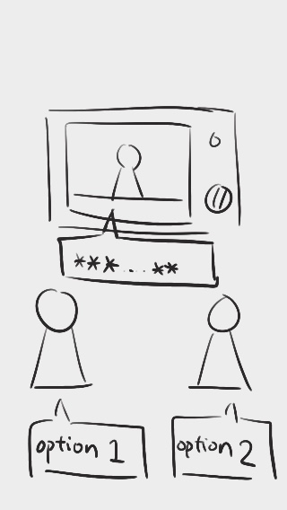
Initial concept sketches
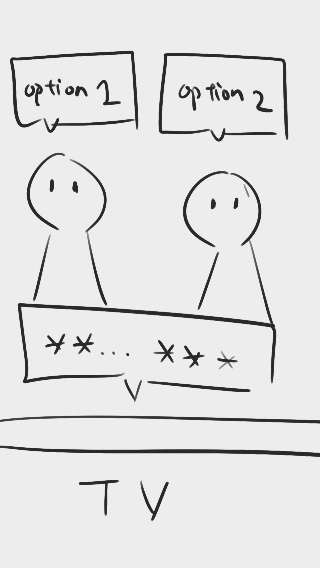
Concept Refinement
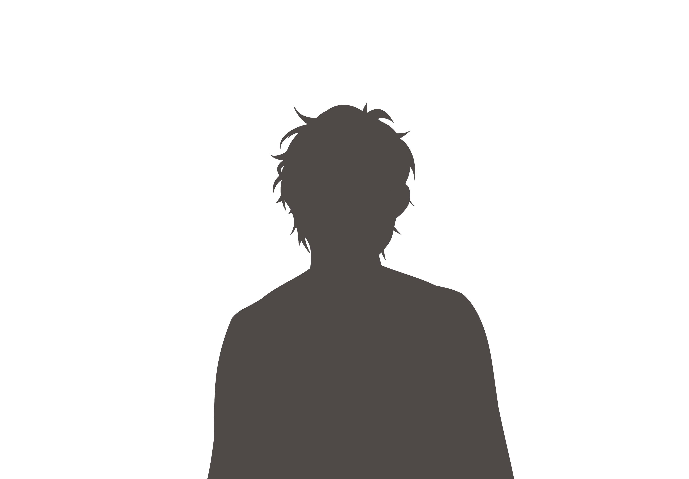
Character design
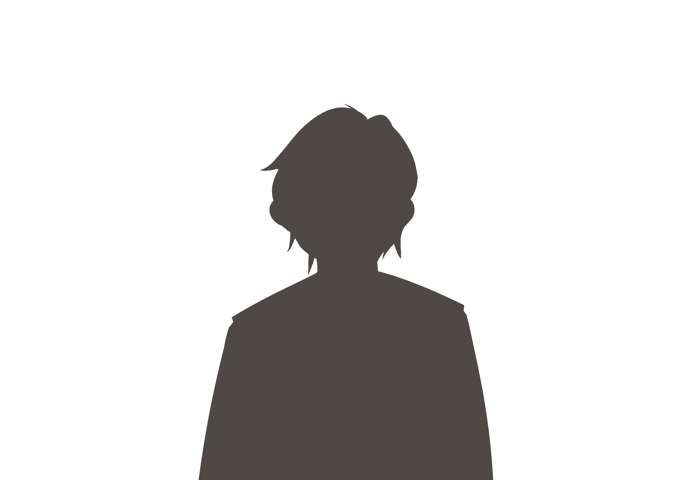
Character design
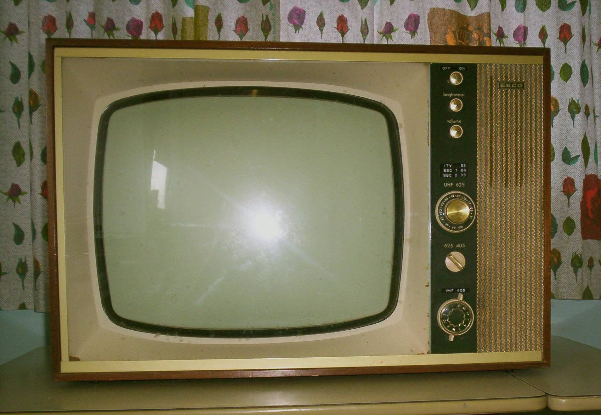
Old Television Reference Image
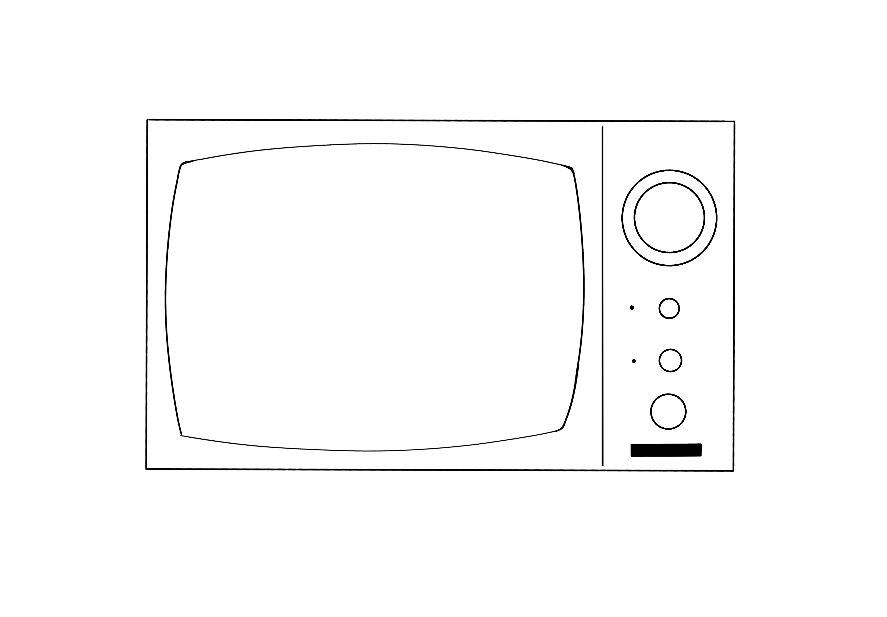
Initial Television Design

Evolved Television Design
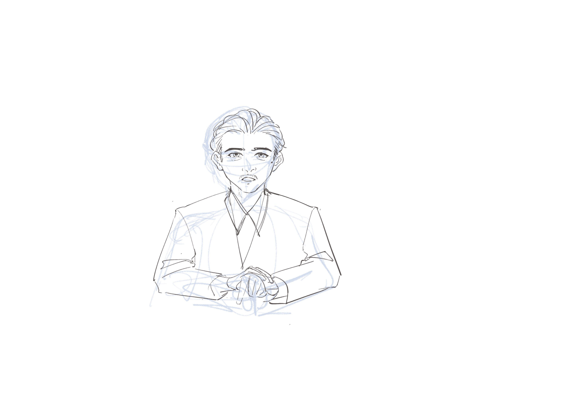
Initial President Design
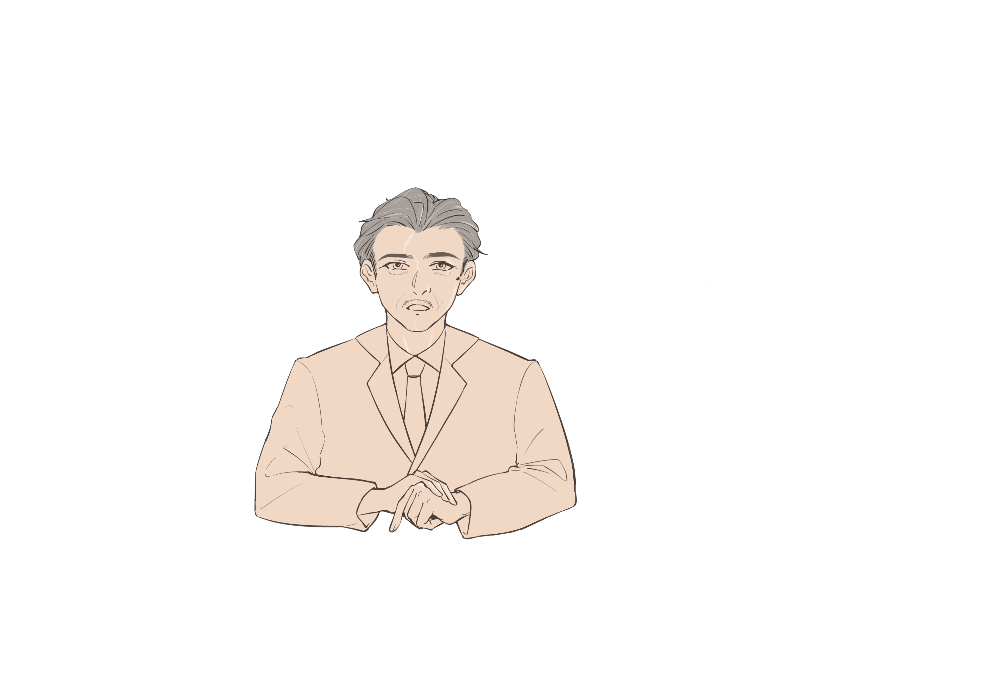
Refined President Design
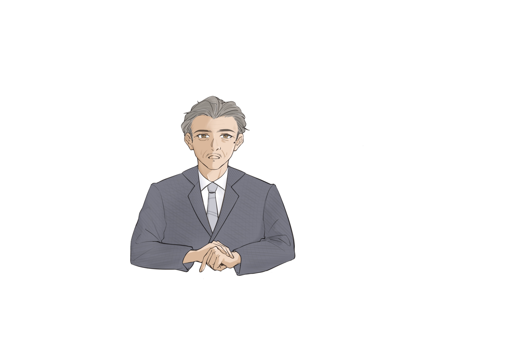
Final President Design
04
Challenges
The biggest challenge in this artifact was layout and positioning, where initially there were visual bugs that needed to be addressed such as:
- The shadows representing Mateo and Kolin initially overlapped with dialogue elements
- Fixed positioning caused alignment issues across screen sizes
- The interface did not scale properly for mobile devices
To solve this the layout had to be restructured by adjusting the vertical spacing elements, removing fixed positioning, and leaving intentional empty space to stabilize the alignment.
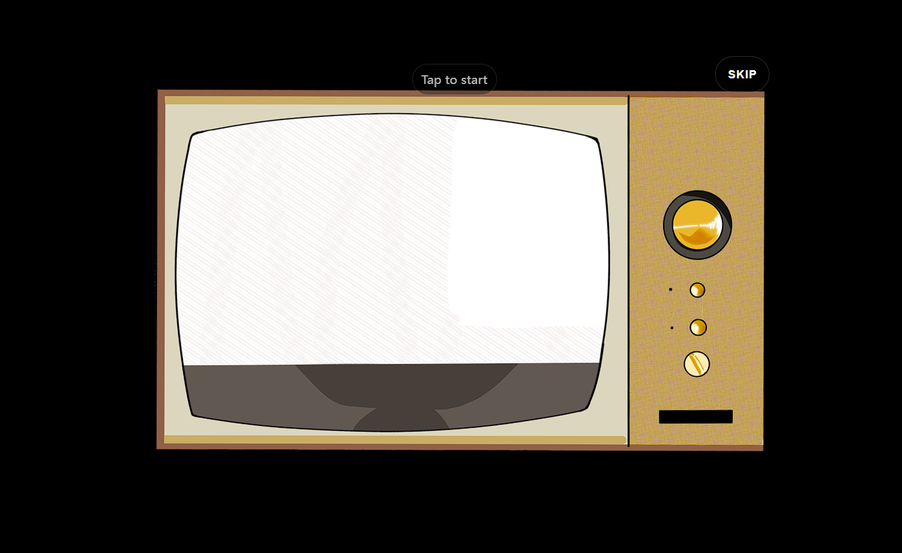
Layout and positioning fixes
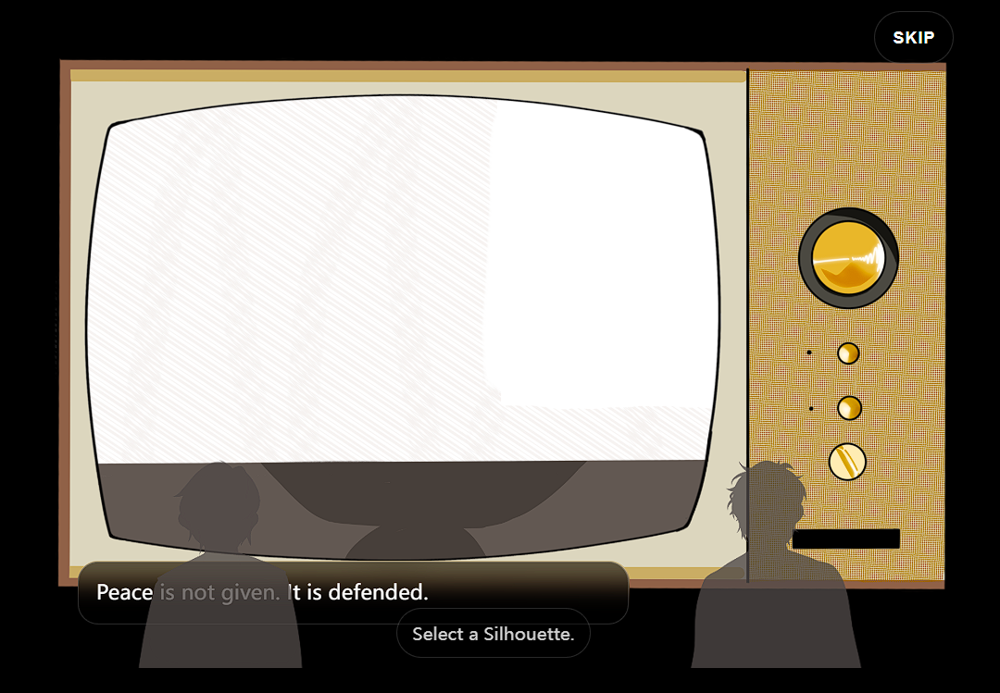
Element Overlap Bug
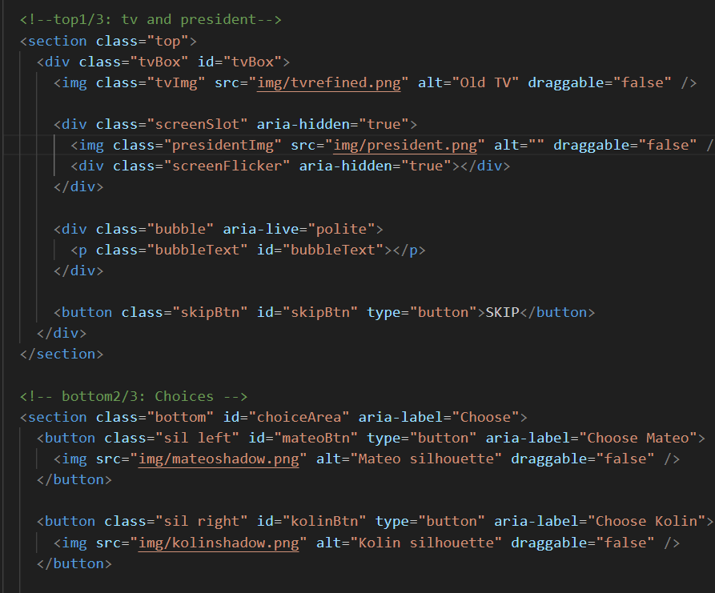
Fixing Element Overlap Bug
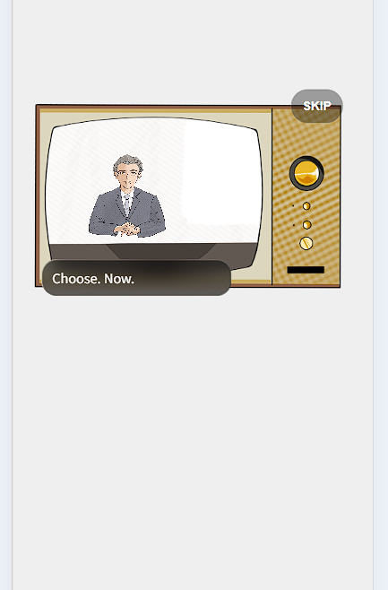
Character and TV positioning
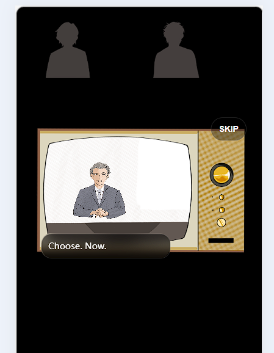
Text box positioning
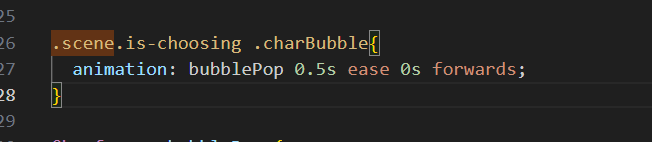
Text box appearance
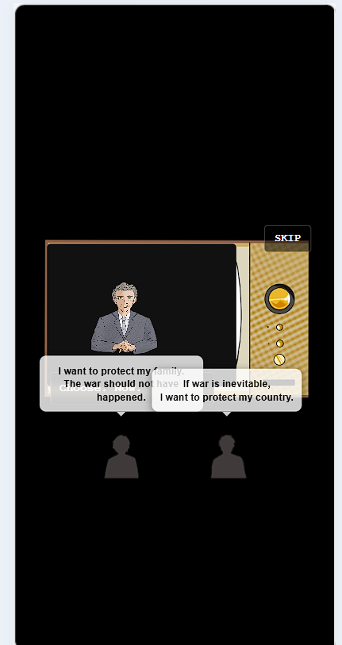
Text box overlap issue
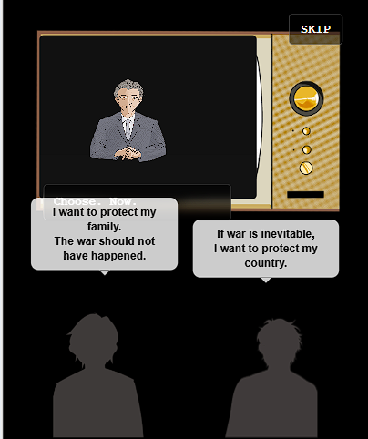
Text box overlap 2
05
Reflection
This artifact helps set the narrative tone and shows how media shapes perceptions. This artifact demonstrates that storytelling is not just about what is shown but how also how it’s framed. By placing users in front of a controlled broadcast, they experience how authority can guide interpretation before the user even makes a choice.